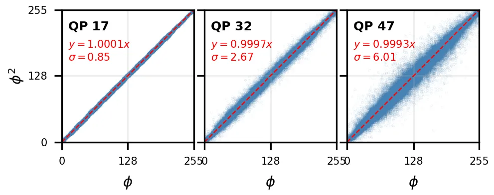
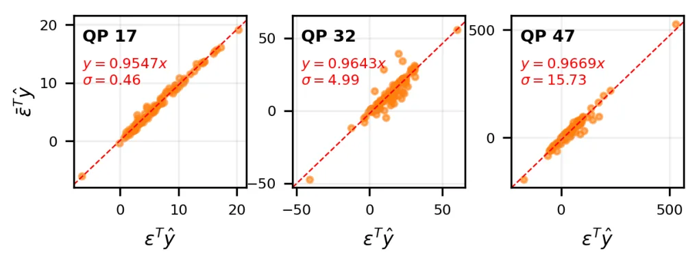
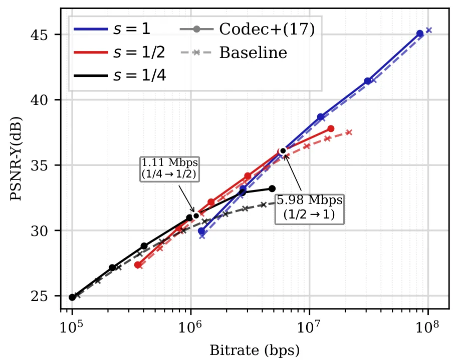
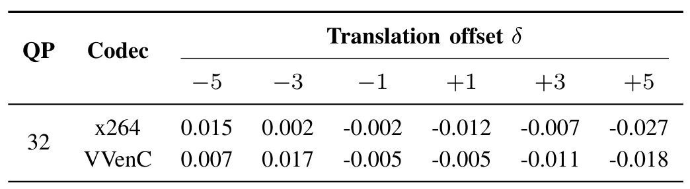
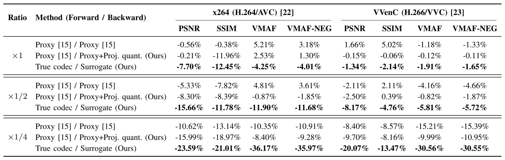

神经编解码器 Wrapper 的投影式替代梯度解释A Projection-Based Surrogate Gradient Interpretation for Neural Codec Wrappers
主要是视频压缩训练方法，对 SLAM/GNSS 直接相关性低；可能对边缘视觉系统低码率传输有间接意义。
一句话工作总结
把传统视频 codec 的替代梯度解释为局部投影近似，并用于训练完整神经预/后处理 wrapper。
摘要
神经 wrapper 通过学习式预处理和后处理提升传统视频 codec 压缩效率，但 codec 中大量离散决策导致端到端训练不可微。本文重新解释 SCALED 替代梯度：它可看作视频 codec 的一阶局部近似，而不仅是重参数化技巧。作者进一步将该梯度用于完整神经 wrapping，即同时训练 pre- 和 post-processing 网络，并证明其跨不同 codec、质量因子和下采样任务有效，在 x264 与 VVenC 上取得最高约 -23.59% 和 -20.07% BD-Rate(PSNR) 改善。
Neural wrappers are learned pre-and postprocessing networks designed to enhance the performance of conventional video codecs. Although these approaches can significantly improve compression efficiency, training them remains challenging due to the non-differentiability of video codecs, which arises from the multiple discrete decisions involved in the encoding process. Surrogate gradients have recently emerged as an effective solution for enabling end-to-end learning with conventional codecs. They offer two main advantages: they avoid training an additional network to mimic the codec, and they can improve compression performance. In particular, the recently proposed SCALED method, which leverages the true compression error, has shown strong results for training neural pre-processors such as downscalers. However, this SCALED gradient was originally introduced as a reparameterization trick, which limits its interpretability. In this paper, we show that this surrogate gradient can be interpreted as a first-order local approximation of the video codec, providing insight into its effectiveness. We further demonstrate that it is effective not only for learning downscaling operations, but also for the more challenging task of full neural wrapping with pre-and post-processing networks. Finally, we show that the approach generalizes well across different video codecs, quality factors, and tasks, including multiple downscaling ratios, yielding BD-Rate (PSNR) reductions of up to -23.59% on x264 and -20.07% on VVenC relative to standard resampling baselines.
中文解读摘录
- 英文题名：Scene-Level Heterogeneous Physics Simulation with 3D Gaussian Splats
- 作者：Xiaoyang Liu, Shangzhe Wu, Kai Han
- 类别/来源：cs.GR, cs.AI, cs.CV；rss:cs.GR；采集 score=12；阅读优先级=9.2/10。
- 一句话总结：把 3DGS、网格和流体统一抽象为物理粒子，使捕获场景中的高斯资产能够参与真实交互和非刚体变形。
- 为什么值得看：与 3DGS 场景表示、交互式三维资产和机器人仿真高度相关；亮点在于从渲染表示跨到统一物理表示。需后续确认开源计划、运行成本和复杂真实场景鲁棒性。
- 标签：3DGS、物理仿真、场景级交互、非刚体变形
- 链接：abs / PDF
图表/页面预览

{kind=link}

{kind=link}

{kind=link}

{kind=link}

{kind=link}
